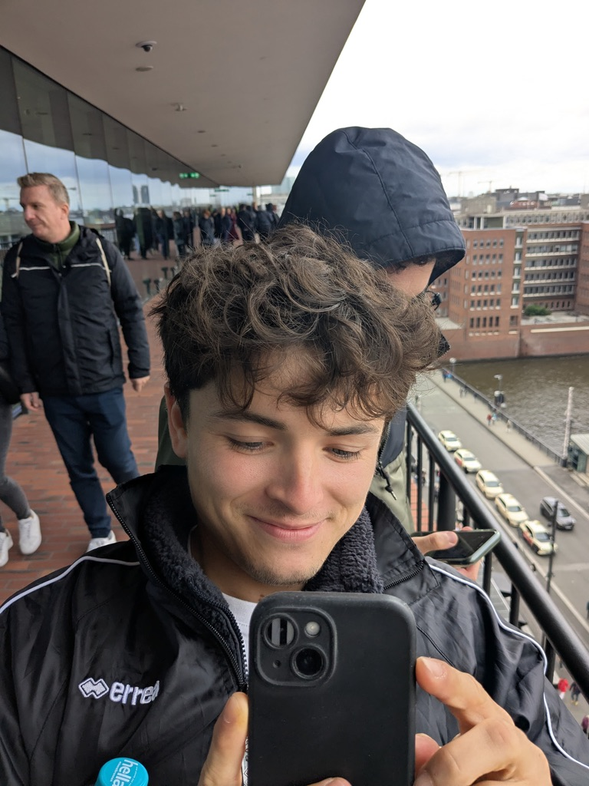
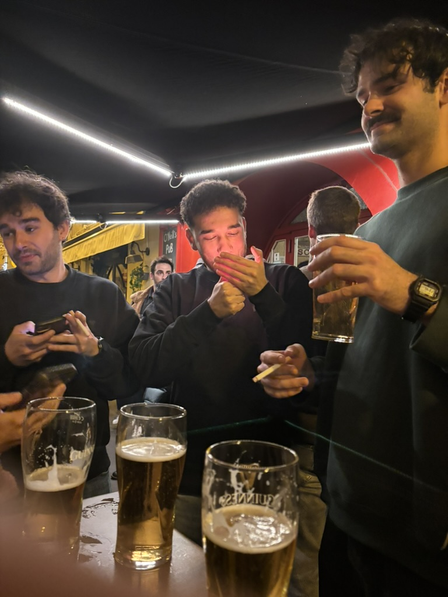
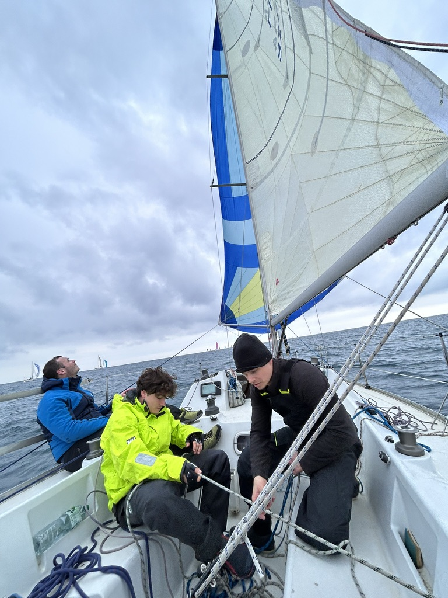
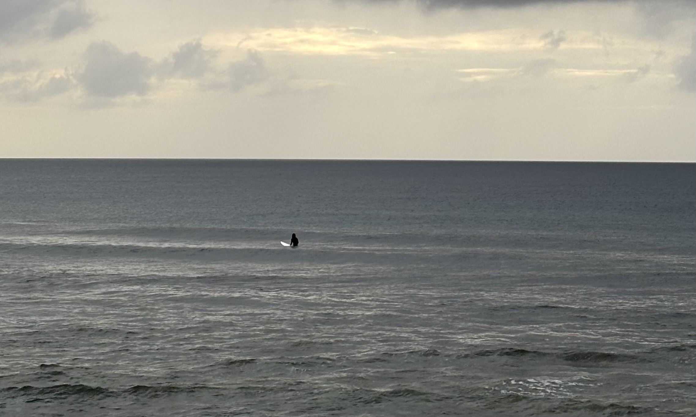

Olivier Bisson
I work on geometric statistics with a focus on applied differential geometry to statistical manifolds. My current interests include Riemannian/quotient geometry on SPD and full-rank correlation matrices, log-Euclidean metrics for statistics on matrix manifolds, orbit-type stratification and geometry of rank-deficient limits.
Quick links: CV · Google Scholar
Contact
Email: olivier.bisson@inria.fr
Office: Fermat, room F202
Postal address: Inria, 2004 Rte des Lucioles, 06560 Valbonne
Research
My research develops differential-geometric tools for statistics on matrix manifolds, with a focus on symmetric positive-definite (SPD) matrices and full-rank correlation matrices. I study how geometric choices—especially log-Euclidean metrics and quotient constructions—shape geodesics, Fréchet means, polynomial regressions... and how these models behave near rank-deficient limits through orbit-type stratification. A recurring goal is to keep the geometry mathematically faithful while remaining computationally practical for real data, such as dynamic functional connectivity.
- Riemannian and quotient geometry on SPD and correlation manifolds (principal-bundle, Riemannian submersion).
- Log-Euclidean frameworks for efficient statistical computations (geodesics, means, trajectories).
- Differential calculus for quotient-geodesic computations (e.g., derivative of the stretch tensor).
- Extensions toward rank-deficient boundaries (stratified/PSD limits and finite-distance strata).
- Open-source contributions: implementations of several Riemannian metrics and matrix manifolds in geomstats.
(Pre)Publications
Talks & Conferences
Teaching
Personal
I come from south of France and I enjoy rock climbing, sailing, beach volleyball, going out and traveling. I love the sea. I am deeply conviced that anyone can do maths.
Live a life of ease


